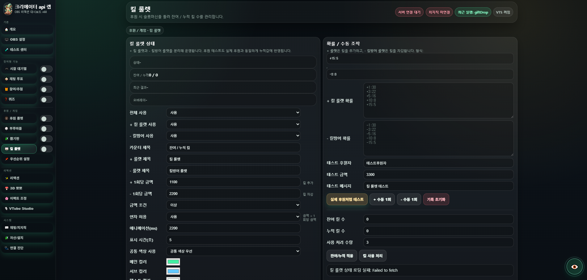

쉬운 API 적용
치지직 Developers에서 발급받은 정보를 입력하고 저장하면 채팅/후원 연동 상태를 대시보드에서 확인할 수 있습니다.
치지직 채팅/후원 × OBS × VTube Studio
치지직 채팅과 후원을 방송용 리액션, 룰렛, 슬롯머신, 참여 기능으로 연결하는 로컬 실행형 대시보드입니다.

Core Features
채팅과 후원을 룰렛, 슬롯머신, 참여/추첨, 캐릭터 리액션으로 연결해 방송 화면을 더 생동감 있게 만들어보세요.
치지직 Developers에서 발급받은 정보를 입력하고 저장하면 채팅/후원 연동 상태를 대시보드에서 확인할 수 있습니다.
후원 시 룰렛 수를 누적하거나 차감해 잔여/누적 킬 수를 관리할 수 있습니다. 실제 후원 테스트와 수동 조작도 지원합니다.
채팅 또는 후원 트리거로 슬롯머신 연출을 실행하고, OBS 오버레이에 방송용 효과로 보여줄 수 있습니다.
명령어 기반 참여, 투표, 추첨, 리액션 실행 등 채팅을 방송 진행 도구로 확장합니다.
후원 금액 조건에 따라 룰렛, 이펙트, 던지기, 누적 카운터 같은 기능을 자동으로 실행할 수 있습니다.
시청자가 채팅 명령어로 참여 신청을 하면 대기열과 오버레이가 자동으로 갱신되도록 구성할 수 있습니다.
채팅 투표 결과를 퍼센트로 보여주거나, 참여 명령어 기반으로 랜덤 추첨을 진행할 수 있습니다.
VTube Studio API와 연결해 간식, 치즈, 하트, 선물 등 캐릭터 반응형 연출을 설정할 수 있습니다.
브라우저 소스 URL을 OBS에 넣어 방송 화면 위에 리액션, 룰렛, 안내, 대기열 등을 표시합니다.
Dashboard
좌측 메뉴에서 원하는 기능을 선택하고, ON/OFF와 테스트 버튼으로 방송 전에 동작 상태를 빠르게 확인할 수 있습니다.
Built-in Guidebook
별도 파일을 찾을 필요 없이 사이트 안에서 가이드북을 바로 넘겨볼 수 있습니다. 페이지 목록을 누르거나 이전/다음 버튼으로 이동하세요.
Must Read
프로그램 사용 전 아래 내용을 반드시 확인해주세요. 같은 내용은 필독.txt 파일로도 제공됩니다.
[사용 신청 양식] 방송국 주소: 주요 사용 목적:전달해주신 정보는 사용자 확인 및 사용 목적 리서치 용도로만 활용됩니다.
Download
프로그램 사용을 원하시면 디스코드 catmozzi_ 로 방송국 주소와 주요 사용 목적을 보내주세요. 다운로드 파일은 아래 Google Drive 폴더에서 확인할 수 있습니다.